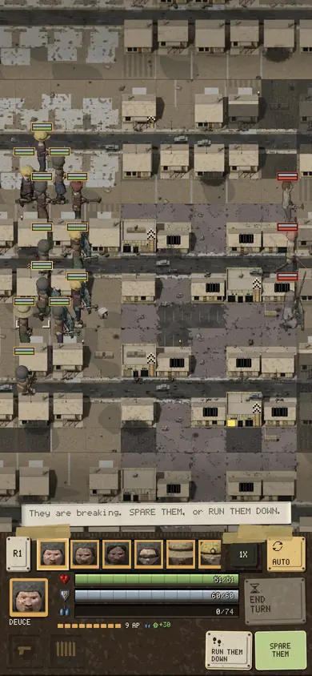
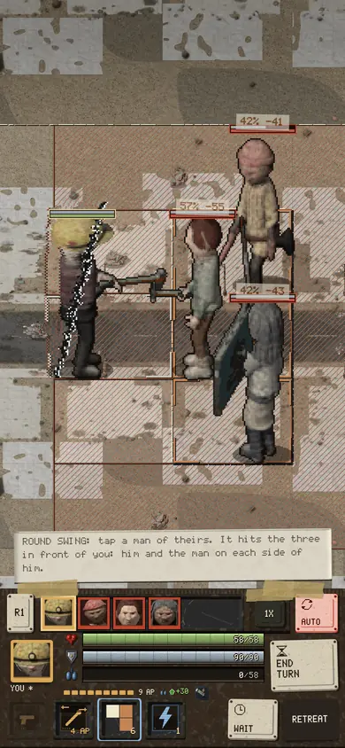

BEFORE
NOW
Before: YOU walks off after the man running away, then comes back a round late. Now: YOU goes straight to the man hurting RAUL.
Same fight, same dice, his phone, the game's own camera.
A runner is stabbing RAUL. Another of theirs is already running away. YOU has the maul and AUTO is on.

